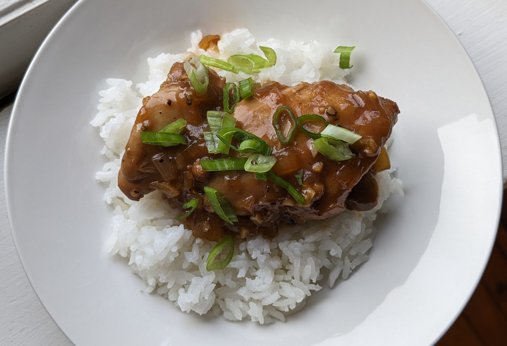

Filipino Chicken Adobo

Author: Nagi | RecipeTin Eats |
Cooked: June 19, 2023
Yields: 4 Servings | Prep Time: 20 Minutes | Cook Time: 40 Minutes
Ingredients
- 6 chicken thighs, boneless and skinless (1.5-2 lbs)
- 3 garlic cloves, minced
- 1/3 c. soy sauce
- 1/3 c. + 2 Tbs white vinegar
- 3 dried bay leaves --------------------------
- 2 Tbs vegetable oil
- 3 garlic cloves, minced
- 1 small yellow onion, diced
- 1 1/2 c. water
- 2 Tbs brown sugar
- 2 tsp coarse cracked black pepper
- 2 green onions, sliced
Marinade
Filipino Chicken Adobo
Directions
- Combine chicken and marinade ingredients in a bowl and let marinate for at least 20 minutes.
- Heat 1 Tbs of oil in a skillet over high heat. Remove chicken from marinade (reserve marinade) and cook for 1 minute of each side. This made be done in batches. Remove the chicken and set aside.
- Add remaining 1 Tbs of oil to pan and add the garlic and onion cooking for 1.5 minutes.
- Add the reserved marinade, water, sugar, and black pepper to the pan and bring to a simmer. Reduce heat to medium-high and simmer for 5 minutes.
- Add the chicken smooth side down and cook for 15 minutes. Flip the chicken and cook for another 10 minutes or until the sauce thickens to a jam-like syrup.
- If the sauce still isn't thick enough after the 25 minute cook time, remove the chicken from the pan and let the sauce simmer alone until thickened. Then return the chicken to the pan and coat in the sauce.
- Serve over rice and garnish with the green onions.
Additional Notes
- I cooked this in a medium cast iron (which I was initially worried about since dealing with vinegar), but it worked out with no issues. I will say that things were a bit tight in there with 6 thighs. May want to use a bigger pan in the future.
- Wouldn't mind a little heat in this dish. Maybe a diced chili or even just a little chili powder.